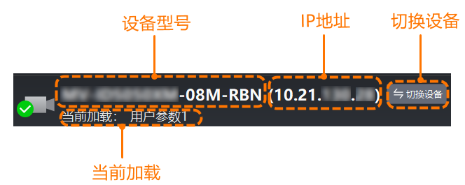

在设备列表发现读码器后，可连接设备以进行后续的调试和读码工作。
连接设备有以下2种方式：
双击读码器名称。
单击设备名称右侧的。
若需断开连接，单击设备名称右侧的即可。
完成读码器连接后，会直接进入客户端主界面。此时可通过左上角的读码器信息栏查看以下信息。

设备型号：双击可打开悬浮的设备列表，参考上述操作进行其它设备的连接。
若在连接后配置中重命名用户ID，读码器信息栏中会显示用户ID而非设备型号。
当前加载：显示当前加载的参数组，包括默认参数和自定义参数组。可通过快捷工具栏的参数保存设置开机自加载的参数组，也可手动切换需加载的参数组。具体操作请见保存参数。